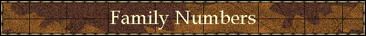
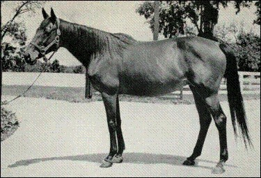

|

|
|
|
What They Are & How To Use Them Ellen Parker Reprinted from PEDLINES #45—Sep 1999
Background In the course of researching pedigrees, one of our greatest tools for finding inbreeding patterns is the family number. We use them so frequently that we seldom give them any thought, but for those new to the study of Thoroughbred pedigrees, they remain a mystery. First, we need to recognize how we keep track of our horses. Certainly, anyone can get a sire printout. But horses by the same sire are just that - horses by the same sire. An individual stallion can sire hundreds of offspring. But mares can produce only a dozen or so. As a result, it is far easier to keep track of horses by their female lines than by their male lines. So when we go to a yearling sale, or examine a pedigree page in the stallion register, the female family is prominently displayed. No sire is an afterthought, but the family is still the easiest way to trace ancestry. Which brings us to the man who devised the family system we use today, C. Bruce Lowe, an Australian whose book Breeding Racehorses by the Figure System was first published in 1895, shortly after his death. Prior to his passing, Lowe had entrusted his research to William Allison of The Sporting Life, and it was Allison who was eventually responsible for the publication of Lowe's findings. Commonly referred to as "the figure system", in its early years, Lowe's work found immediate disciples, such as the highly respected Col. Hall Walker and August Belmont II, breeder of Man o' War. Today, we still use the basic concept that Lowe set forth, though we seldom use the whole of his research. This is due in large part to Lowe's attempt to take his basic classification of female families and make them something more. The renowned pedigree researcher Abram Hewitt opined in a two-part 1985 Thoroughbred Record article that this is where Lowe went awry, as most of his conclusions were wrong and some of his data was erroneous. We will comment on that in a moment.
The Theory Though Lowe did mention the three foundation sires in his research, most of his work was confined to mares. He began his research by taking each mare in the English General Stud Book, then classifying her according to her direct tail-female descent back to the earliest known registered mare (taproot mare). Lowe then refined his work by taking each of these taproot dams and classifying them according to the total number of wins each family had recorded in the three classic races for English Thoroughbreds - the Derby, the Oaks and the St. Leger. His initial research led him to 43 separate families. The family with the most classic wins was Family No. 1, that with the second most classic wins was Family No. 2 and so forth. Lowe then proceeded to get a little complicated, classifying families 1-5 "running families," and his original conclusion was that these families had a female sex bias and did not produce good sires. Over time, this conclusion proved wrong, but in Lowe's defense, he was doing this work 100 years ago without the aid of a computer. He conversely felt that families 3, 8, 11, 12 and 14, or horses inbred to these families, were the best sire families. These conclusions have also proven faulty. Note that Family No. 3 is in both groups, and Lowe considered it "pliable", or able to produce both good runners and good sires. Lowe believed that these nine families - 1, 2, 3, 4, 5, 8, 11, 12 and 14 were the "core" of the breed and essential for successful breeding. Yet we know that some families have evolved since his original research. Family No. 9 contains the powerful Lady Josephine clan, an extremely strong sire source group of mares; Family No. 16 gave us Plucky Liege; Family No. 13 Frizette; and Family 21 Hidden Talent and *Clonaslee, and so forth. As time went on, and these families grew, certain mares within each family began to establish their own identities, and thus the families were sub-divided, i.e. family 1-A, 1-B, 1-C, etc. The system has been in existence for so long that some of the really huge families could probably use yet another sub-division, say 1AA, 1BB and so on, but there do not seem to be any volunteers for the job. Until someone comes forward to make the attempt, it is important to know that due to the massive number of horses in some families, that even within the various branches, say Family No. 21-A, that there are "sub-sub" branches - it being possible for two horses from this branch, like Pampered King II and Too Bald, to be so far removed in their actual relationship to each other as to be not really related at all, despite having the same family number.
A Seeming Contradiction When Abram Hewitt discussed Lowe's findings and found them contradictory, he based this criticism on what he considered an insoluable paradox: If Lowe believed the tail-female line to have worth in and of itself, then inbreeding to it was a very different thing indeed, particularly if the horse in question came from a different family than that to which he was inbred. But we are not at all certain that we think this is a contradictory finding. What Lowe's main problem was that he failed to fully explain his theory. In fact, what he seemed to be getting at in a round-about fashion is that "family rules", or what Bull Hancock used to say about the family being stronger than the individual. This is the key that many researchers use when examining pedigrees today. But where does family influence leave off and inbreeding take over? That is, of course, the question, since there seems to be some evidence that while the family itself controls how a horse runs, his overall pedigree composition - which includes inbreeding - has more to say about how he sires (or in the case of a mare, how she produces). Certainly a horse's own female family is of major import, but if he has five lines of *La Troienne, this, too, is going to matter. We do not find a contradiction in this because every pedigree (save full siblings) is different and must be examined as such. If the horse in question is not only inbred to *La Troienne, but also traces to her in tail-female, then it obviously is even more important because the horse is, in fact, receiving an added amount of strength from his own, good, female family. But in addition to inbreeding and tail-female line, the horse's own individuality must be examined. Take the case of Manila, who was from the No. 16 family, but was inbred to Fairway/Pharos (Fam. No. 13E) and to half siblings Bruleur x2/Terre Neuve (Fam. No. 4D). Manila's pedigree had a distinctly French flavor, owing to the similarity between Barra II, second dam of his sire Lyphard, and *Le Fabuleux, his broodmare sire, who shared a Ksar/Rabelais/La Farina/Alcantara II contribution. Not only did Manila look like his French blood, bearing a notable resemblance to his broodmare sire *Le Fabuleux, but he sired like it, getting late maturing horses who eventually earned him a ticket out of the country to the obscurity of Turkey. Yet his female family, that of Colosseum, was a considerably faster clan and gave him the ability to win in track-record times. Thus we have something of an answer within the Lowe system. *Gallant Man is another such example. Here was a "cup horse" par excellence. He won the Belmont at 12 furlongs, the two-mile Jockey Club Gold Cup, the 1 5/8 mi. Sunset Handicap. But at stud, *Gallant Man generally sired very fast offspring and was eventually classified a brilliant/classic Chef-de-Race. Yet he is no more a mystery than Manila. *Gallant Man was very closely inbred - 2 x 2 - to three-quarter siblings Mah Iran and *Mahmoud, both grandchildren of Mumtaz Mahal, the "flying filly" and a dominant for speed within the breed. Yet his own female family, that of Qurrat-Al-Ain, was far more classic. He quite simply ran like his family and bred like his pedigree composition. So direct female descent may well play the largest part in how a horse races, but his overall pedigree contribution and inbreeding - not to mention which part of his pedigree he most closely resembles - determine how he will breed. This is not only important, but vital, when assessing young sire and broodmare prospects. They cannot always pass on their racing ability; at stud, they have only their genetic composition to bequeath. Lowe also attempted to differentiate between sire lines, calling Eclipse the "king of sires", yet data as late as the 1980's proves that most horses have more lines of Herod than Eclipse. Adding to the confusion is Hewitt's commentary on the possible mistake made in the pedigree of Galopin, who is purported to be by Eclipse-line Vedette, but whose stud groom claimed was actually by Herod-line The Flying Dutchman. If this allegation were true, it would mean that all St. Simon relations are not, in fact, Eclipse relations but are relations instead of Herod, altering the composition of the stud book very much indeed.
The Families Today, the families established by Lowe have been expanded to include families no. 44-74. There are also British Half-Bred Families B1-B26; American Families A1-A39; Colonial (Australian and New Zealand) Families C1-C36; Argentine Families Ar1-Ar2; Polish Families P1-P2; and new families A38, A39, C34, C35, and C36, which are "new families", which appeared for the first time in Volume III of the Stud Book. The original taproot mares follow (Note - many do, in fact, have the same or similar names; for example there are several "Royal Mares".): Family No. 1 - TREGONWELL'S NATURAL BARB MARE; Family No. 2 - BURTON BARB MARE; Family No. 3 - MR. BOWES' BYERLY TURK MARE; Family No. 4 - LAYTON (VIOLET) BARB MARE; Family No. 5 - THE MASSEY MARE; Family No. 6 - OLD BALD PEG; Family No. 7 - BLACKLEGS ROYAL MARE; Family No. 8 - BUSTLER MARE; Family No. 9 - VINTER MARE; Family No. 10 - CHILDERS (GREY) MARE; Family No. 11 - SEDBURY ROYAL MARE; Family No. 12 - ROYAL MARE - Family No. 13 - ROYAL MARE; Family No. 14 - THE OLDFIELD MARE - Family No. 15 - yet another ROYAL MARE; Family No. 16 - SPOT (HUTTON'S) MARE - Family No. 17 - BYERLY TURK MARE; Family No. 18 - OLD WOODCOCK MARE; Family No. 19 - OLD WOODCOCK (DAVILL'S) MARE; Family No. 20 - DAFFODIL'S DAM; Family No. 21 - QUEEN ANNE'S MOONAH BARB MARE; Family No. 22 - BELGRADE TURK MARE; Family No. 23 - PIPING PEG'S DAM; Family No. 24 - HELMSLEY TURK MARE; Family No. 25 - BRIMMER MARE; Family No. 26 - OLD MERLIN MARE; Family No. 27 - SPANKER MARE - Family No. 28 - PLACE'S WHITE TURK MARE; Family No. 29 - NATURAL BARB MARE; Family No. 30 - DUC DE CHARTRES' HAWKER MARE; Family No. 31 - DICK BURTON'S MARE; Family No. 32 - ROYAL MARE (NATURAL BARB MARE); Family No. 33 - HONEYCOMB PUNCH'S DAM; Family No. 34; CLUBFOOT; Family No. 35 - BUSTLER MARE; Family No. 36 - CURWEN BAY BARB MARE; Family No. 37 - MERLIN'S DAM; Family No. 38 - THWAIT'S DUN MARE; Family 39 - PERSIAN STALLION (LORD HOWE'S) MARE- Family No. 40 - ROYAL MARE; Family No. 41 - BYERLY TURK MARE; Family No. 42 - SPANKER MARE; Family No. 43 - LORD ARLINGTON'S NATURAL BARB MARE.
A Sampling of Well Known Matrons From Individual Families: Family 1 - *La Troienne; Fairy Star; Chelandry; Brulette; Malva; Canterbury Pilgrim; Rouge Rose; Cradle Song; Vaucluse; Friar's Carse; Marchetta....and many more. Family 2- Aloe; Fly By Night II; *Cinq A Sept; Amie; Rosedrop; Rinovata; Cinderella; Seclusion....and many more. Family 3 -Casiopea; Quiver; Brown Bess (1844); Rose of England; Uvira II; Pocahontas (1837); Black Duchess, etc. Family 4 - Mahubah; Golden Way; Boudoir II; Anne de Bretagne; Dark Display; Bucolic; Maggie B. B.; St. Marguerite; Catnip, etc. Family 5 - Bird Flower; Golden Harp; La Grisette/Grey Flight; Remembrance; Waldrun; Simon's Shoes/Rough Shod II; Kaiserwurde; Ballantrae; etc. Family 6 - Dona Cecilia; Democratie; Tofanella; Teresina; Myrobella/Selene; etc.Family 7 - Lady Comfey; Jalouse; Quick Change; Hermione, etc. Family 8 - Schiaparelli; Belle Rose; Cherokee Rose II (1910)/Erin; Torpenhow; Padua; Summit; Alcibiades; Santa Brigida; Beaming Beauty; Lady Be Good, etc. Family 9 - Lady Josephine; Idle Dell (Hildene/Sunday Evening); Ruddy Light (Real Delight, etc.); Fairy Gold; The Apple; Nellie Flag; Affection/Bourtai; Minnewaska/The Squaw II; Antwort, etc. Family 10 - Queen Mary; Court Dress; Iribelle; Beldame; Pearl Of The Loch, etc. Family 11 - Alabama Gal; Grolle Nicht; Bonne Bouche; La Futelaye; May Queen; Bathing Girl; Bebop II, etc. Family 12 - Smokey Lamp; La Grelee; Forteresse; Thistle, etc. Family 13 - Miss Minnie; Frizette; Jean Gow; Anchora, etc. Family 14 - Scotch Gift; Sky Glory; Black Maria; Cresta Run; Becti; Pretty Polly; Herodias; Duke's Delght, etc. Family 15 - Bourbon Belle; Gute Sitte, etc. Family 16 - Concertina (Plucky Liege; Friar's Daughter); Pearl Cap; Schwarzgold; *Agnes Sard; Spicebox; Pelerine; Colosseum; Banquet Belle; Sceptre, etc. Family 17 - La Pompadour; Flambette, etc. Family 18 - Conniver Family 19 - Forest Song; Trustful; Bloodroot; Calluna, etc. Family 20 - Rush Box; Macaroon; Princess Camelia; Rock Drill; Fancy Free, etc. Family 21 - Cinderella (1885); Hidden Talent; Phase; Nearly; *Clonaslee, etc. Family 22 - Straight Sequence; Aurore Boreale; Athasi; Queen's Statute; Evening; Our Lassie; Eulogy, etc. Family 23 - Erne; Bell Bird; Two Bob; Mannie Gray; Kildeer, etc. Family 24 - Kingston Rose Family 25 - Ace Card Family 26 - Imagery; Rosemain; *Papila Family 27 - Viridiflora Family 28 - Bereitschaft Family 29 - Tracemond Family 30 - Nothing recent Family 31 - Macht Family 32 - Nothing recent Family 33 - Nothing recent Family 34 - Nothing recent Family 35 - Nothing recent Family 36 - Nothing recent Family 37 - Daring Bidder Family 38 - Nothing recent Family 39 - Nothing recent Family 40 - Nothing recent Family 41 - Nothing recent Family 42 -Panaview Family 43 - Nothing recent Of those families added to Lowe's original 43 (44-74), only Family No. 52 (SIR JOHN SEBRIGHT'S ARABIAN MARE) is really worth mentioning. This family has produced, in recent years, Canadian Oaks winner Par Excellence; Irish 1000 Guineas second Ballymaginathy; Washington Singer Stakes winner Khozaam and Curragh S. winner Jay Bird. The American families are: A1 - Ella Crump; A2 - Butterfly; A3 - Hart's Maria; A4 - Fanny Maria; A5 - The Kirtley Mare; A6 - Albert Mare; A7 - Countess; A8- Princess; A9- Spot; A10-Chanticleer Mare; A11-Minerva Anderson; A12- Knowsley Mare; A13-Lady Robin; A14-Shepherdess; A15 - Bedford Mare; A16 -Sally Kirby; A17- Potomac Mare; A18 - Piccadilla; A19 - Jenny Dismal; A20 - Nell; A21 - Jeannetteau; A22 - Black Sophia; A23- Lavina; A24 - Saltram Mare; A25 - The Sultana; A26 - Philadelphia; A27 - Ellen Swigert; A28 - Lucy Fowler; A29 - Old Pet; A30 - Araline; A31 - Marcella; A32 - George Martin Mare; A33 - Mary Jones; A34 - Yarico; A35 - Prunella's Dam; A36 - Lucretia; A37 - Phoebe; A38 - Moses (Haxhall's) Mare; A39 - Ledbetter Mare. Of the America families, Ella Crump's (A-1) and Fanny Maria (A-4) are by far the most superior; A13, Lady Robin, has some recent worth with the advent of the mare Delicacy (1929 by Chicle) and ancestress of Smart Angle, Greek Game, etc.
A Sampling of the Best American Families: A1 - Frilette; Sweet Betty A4 - Betty Derr (Iron Maiden, Judy-Rae, etc.) A11 - Minerva A13 - Delicacy
Conclusion Lowe also stated that the best sires were outcrossed, the best broodmares inbred. Given another 100 years of Thoroughbred breeding with which to work, and the power of today's computers, we know more about linebreeding. Whether one is using sire inbreeding - say to *Nasrullah - or inbreeding to a great mare - i.e. Plucky Liege, he or she is still inbreeding to a great family. And if one discounts in the *Nasrullah inbred's pedigree lines of his close relations like *Royal Charger, *Mahmoud, Badruddin, etc., then he is not covering the whole of the matter, which is, in fact, linebreeding to their common relative Mumtaz Mahal. Whether one agrees or disagrees with all of Lowe's theories, his family numbers have given researchers the greatest tool possible to seek out similarities in pedigrees. If a horse has seven lines of the 9C family in his pedigree, all horses tracing to that family may not be closely related, but enough of them may be so that a pattern is formed. So these family numbers, along with knowledge of the major breeders and their best sires and dams, give us the best possible information to seek out linebreeding patterns in today's runner. This is Lowe's gift - and it is a gift that goes on giving every time a researcher approaches a new pedigree.

*La Troienne
|
Copyright © 2001 Ron & Ellen Parker
|